HookRadar industry report · AI agents for work · Meta Ads Library
Every week, HookRadar analyzes paid ads, landing pages, official social posts and organic trends to uncover the creative patterns driving growth across fast-moving markets.
This report focuses on AI agents for work, but the real story is not about hooks. It is about what happens one click later. Four brands, 18,183 Meta ads and 323 distinct destination URLs later, the landing pages tell a much more honest story than the creatives do: which ideas a competitor is still paying for, and which ones it has already buried.
On the surface, Perplexity Computer, Manus, Lindy and sintra.ai sell the same promise: an AI that does the work instead of answering questions about it. One click past the ad, they are running four unrelated businesses.
| Brand | Meta ads | Destination URLs | Where the traffic goes | Funnels with live ads |
|---|---|---|---|---|
| Perplexity AI | 10,695 | 271 | 203 use-case landing pages, 44 creator pages, 3 Zoom events, app deeplink | 19 |
| sintra.ai | 4,552 | 40 | 5 quiz funnels, 6 role pages, 7 industry pages, homepage, app stores | 11 |
| Manus AI | 2,590 | 5 | App Store and Google Play (98% of ads) | 2 |
| Lindy | 346 | 7 | lindy.ai, lindy.ai/go, a separate brand at meetingsai.com | 2 |
Perplexity treats the landing page as the unit of testing. sintra treats the quiz as the unit of qualification. Manus treats the store listing as the whole funnel. Lindy tried to be two brands and went back to one.
The ad creatives alone would not tell you any of this. Perplexity's video hooks ("Here's how I saved $30,000 using AI", "19 AI models running at the same time") look like a brand campaign. The destination data shows a factory: 203 separate pages, each promising one finished deliverable for one trade or job.
Perplexity has the cleanest funnel experiment in the dataset: name the trade, name the document, build a page for it. Since the first launch spike on April 17 (732 ads in one day), the brand has shipped 203 distinct use-case pages under one path. Twenty-nine of them sell an estimate or bid for a trade (roofing, HVAC, plumbing, fencing, concrete, painting, pool service). Thirty-eight sell an audit of a small business (law firm, yoga studio, vet practice, CPA firm, nail salon).
The page is the hypothesis. Most pages got the same treatment: 95 of the 203 received exactly 30 to 49 ads, which reads as a templated test budget, not a bet. Only 9 pages ever crossed 100 ads.
Then the cull. As of September 21, live ads point to 17 of the 203 pages.
Each page sells one finished deliverable for one trade or job (roofing estimate, CPA firm audit, job applications). Hover a square for the page name and how many ads it received.
Number = ads pointed at the page since April. Construction and real estate hold 7 of the 17 slots.
Sorted by ads received. The first squares are the biggest bets that still died: api-platform (163 ads), seo, video-to-shorts, recruiting.
Perplexity's landing-page factory after five months. The survivors cluster in two verticals (construction, real estate) and three broad jobs (job search, SEO and marketing, finding money).
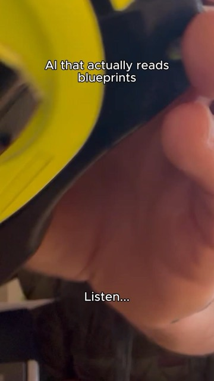
VIDEOlive · 42 d"Blueprints in. Bid-ready estimates out."
Open in HookRadar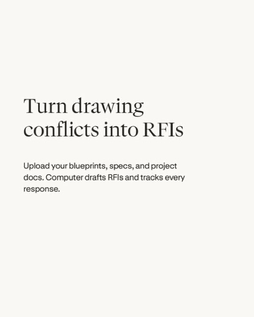
IMAGElive · 5 d"Draft and track RFIs"
Open in HookRadar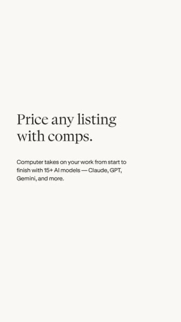
IMAGElive · 11 d"Price any listing with comps"
Open in HookRadar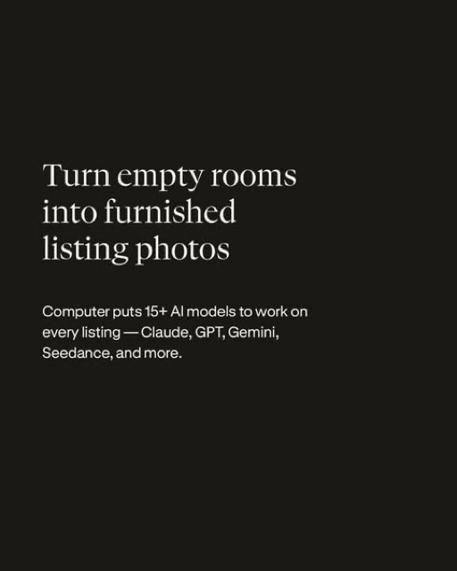
IMAGElive · 6 d"Virtually stage any room"
Open in HookRadar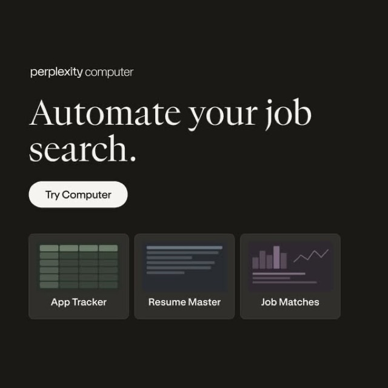
IMAGElive · 1 d"Paste your LinkedIn URL and let Computer find jobs you're a great fit for."
Open in HookRadar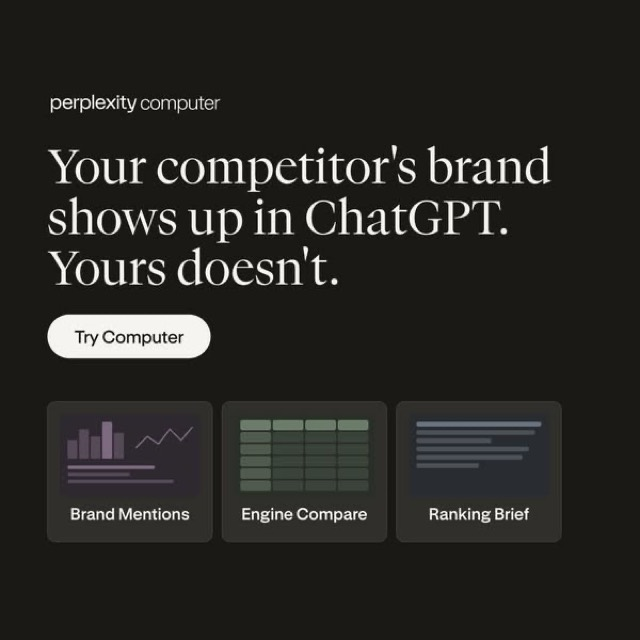
IMAGElive · 26 d"You rank well on Google but ChatGPT never mentioned you."
Open in HookRadar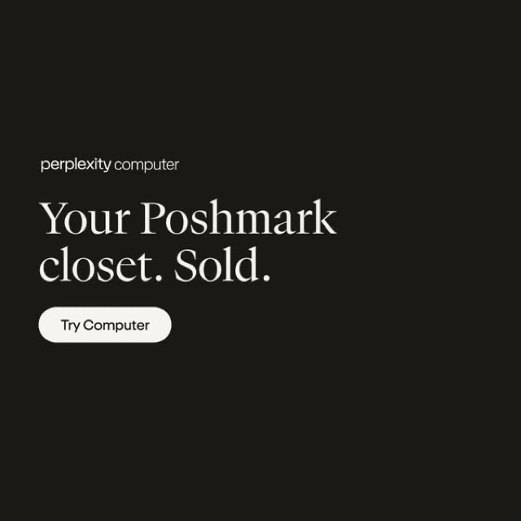
IMAGElive · 26 d"Your closet has 200 listings. Poshmark is showing 12 of them."
Open in HookRadar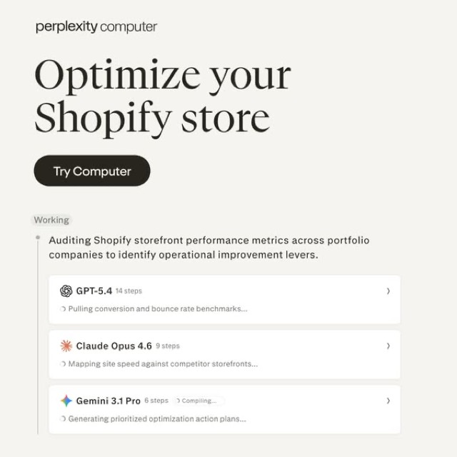
IMAGElive · 26 d"Average Shopify conversion rate: 1.4%. Top stores: 4.7%. The difference is almost never the product."
Open in HookRadarPerplexity's construction page is the one trade funnel that graduated from a 30-ad test to a 42-day video. The ad is not about AI. It is about a spreadsheet the estimator no longer has to build.
Two more funnels ran alongside and went nowhere. Forty-four creator landing pages (pplx.ai/<creator>, perplexity.ai/influencers/<name>) collected 72 ads between them, one to four each, and none is live. Three Zoom event pages for a September 3 live session ("Your warehouse has the answers, the company doesn't know SQL") carried 7 ads and were the only event funnel in the category this year.
The lesson is not that vertical pages fail. The lesson is that the brand with the most money in the category tested roughly 60 verticals and kept two. If your roadmap has "landing page for accountants" on it, Perplexity has already run that test for you: it is in the 92%.
sintra.ai runs the highest creative churn in the set (392 ads launched on September 3 alone) and the most legible funnel architecture. Every destination falls into one of six buckets, and the September 21 snapshot shows which buckets the brand still believes in.
| Funnel type | Pages | Ads | Still funded |
|---|---|---|---|
| Quiz ("Which AI tools are best for your business?") | /quiz, /quiz-gpt, /quiz-claude, /quiz-marketing, /quiz/seo | 1,423 (31%) | 3 of 5 |
| Role pages ("hire your AI copywriter") | /ai-employees/copywriter, sales-agent, social-media-manager, virtual-assistant, seo-agent, customer-service | 210 | 6 of 6 |
| Industry pages | /restaurant-owners, /beautysalon-monthly (+extra), /clothingbrand-monthly, /jewelrybrand, /consultant, /mechanic-shops, /beauty | 456 | 0 of 7 |
| Second domain | sintra.com/restaurant, /beauty, /jewellery, /mechanics | 27 | 0 of 4 |
| Builder pages ("build your own helper") | /build, /helper/build, /helper/hire | 446 | 0 of 3 |
| App stores | iOS, Google Play | 41 | 0 of 2 |
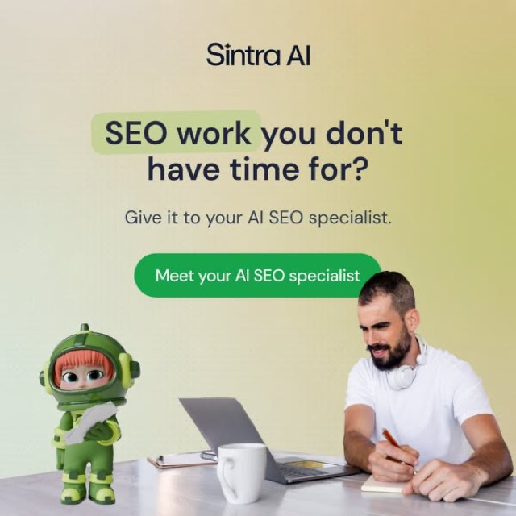
IMAGElive · 16 d"You're the single point of failure in your own business, and you know it."
Open in HookRadar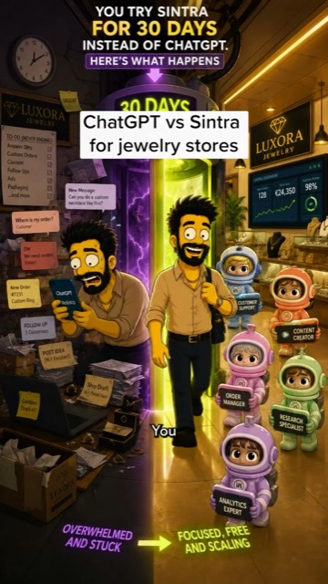
VIDEOlive · 9 d"Is prompting starting to feel like a second job? Retyping who you are, what you do… every single chat."
Open in HookRadar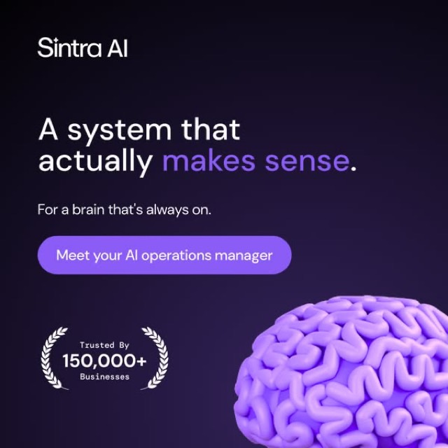
IMAGElive · 16 d"You've got a lot of thoughts in your head, and you've got to get them out."
Open in HookRadar"content creation is highkey 90% admin work and 10% filming and editing"
Open in HookRadar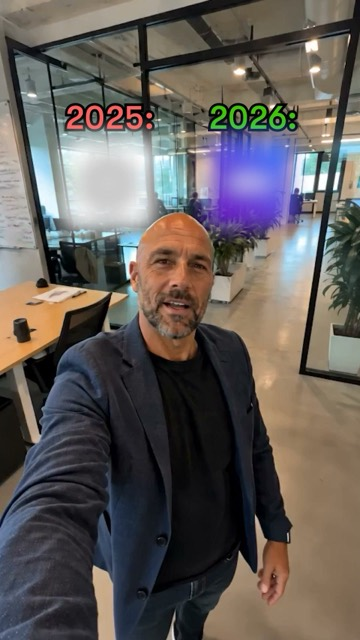
VIDEOstopped · ran 32 d"Take Free Quiz and Find Which AI Tools are Best for your Business."
Open in HookRadar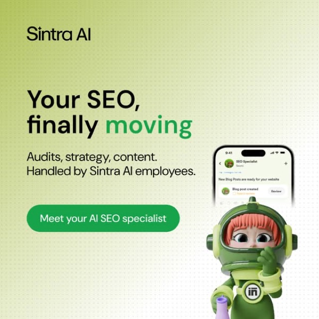
IMAGElive · 17 d"Your SEO, finally moving. Meet your AI SEO specialist."
Open in HookRadarsintra's live set: one owner-burnout statement, seven destinations. The ad does not change; the page does.
The quiz survived by naming the model you already pay for. Plain /quiz is dead. /quiz-gpt and /quiz-claude, launched the same day in August with 17 video variants between them, are both live. The current hook does not mention sintra's product at all.
Roles beat industries. Every industry page (restaurants, salons, clothing brands, jewelry, mechanics) has gone dark. Every role page is live, fed by one image family. The same copy is pointed at six different role pages plus the homepage, which means the destination is the variable being tested, not the creative.
What sintra has already killed for you: every discount and price-anchor hook ("Up to 70% OFF", "PAY FOR 1, GET 12", "From $5,000+/mo to $15.60/mo", "Replace your $5k marketing agency in 5 minutes"), the head-to-head "ChatGPT vs Sintra" comparison (launched and stopped three times: July 27, August 10, August 31), long-form story images, and the cartoon "The team you could never afford. Hired." The brand that tests more than anyone in the category has stopped paying for all of them.
Manus has one funnel and refuses to test another. Of 2,590 tracked ads, 2,544 send to the App Store or Google Play. The website got 43 ads. A co-branded page with Nothing phones got 3. All 19 live ads are text-less vertical videos with a localized install button ("Install now", "Installer", "Cài đặt ngay") that have been running 50 to 68 days.
The creative does the qualifying that sintra's quiz does. HookRadar's Hook Insights rank Manus's Arabic transformation hook ("I thought preparing presentations took hours… until I tried this") at the 99th percentile of the whole category, and a Chinese "two months until my birthday, I need a set of stunning photos" hook at the 98th. Neither mentions agents, models or work. They sell one finished artifact to one person in their own language, then hand them to the store.
No title, no body copy. Just the video and "Cài đặt ngay".
Open in HookRadar"Two more months until my birthday! My birthday means I must post a set of beautiful photos!"
Open in HookRadar"@manus já faz parte da minha rotina."
Open in HookRadar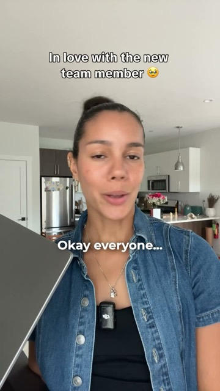
DCOlive · 11 d"Most AI hands you a draft. Lindy hands you a finished task, in the tools your team already uses."
Open in HookRadar"My best account manager quit and I almost closed the agency."
Open in HookRadar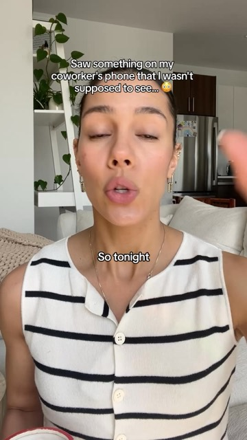
DCOlive · 5 d"Woke up to a clean CRM, follow-ups drafted in my voice, calls prepped, and my calendar reshuffled."
Open in HookRadarManus's September wave: 300+ ads in ten days (September 4 to 14), every one of them to a store listing, then silence from September 15. The brand spends in bursts, not in tests.
Lindy tried to be two brands and came back as one. Lindy's 346 ads split across lindy.ai (177), lindy.ai/go (131) and a separate identity at meetingsai.com with four sub-pages (/brain, /never-blocked, /nobusywork, /doer). The meetingsai experiment absorbed 38 ads and has zero live. After going silent from July 17 to August 19, Lindy relaunched on September 11 and 17 with 41 ads, all to lindy.ai.
Lindy's relaunch drops the second brand, the Slack-inbox POV and the coworker-curiosity hooks. What is left is the promise every rival now makes: finished work, not a draft.
HookRadar tracks 15 brands across four adjacent categories for Speechify (AI work agents, reading and TTS apps, dictation, language learning), roughly 75,000 Meta ads and 670 destination URLs in total. That is enough to see the same funnel idea appear in several places and to check what happened to it each time.
| Funnel idea | Who runs it | What happened |
|---|---|---|
| A landing page per named trade or job | Perplexity (203 pages), sintra (7 industry + 6 role), Wispr Flow (clinicians, lawyers, real-estate agents, bilingual professionals, creators), ElevenLabs (financial services, retail, reception.ai/salons), Grammarly (/students) | Five brands in three categories arrived at it independently. Survivors are roles and artifacts, not industries: sintra keeps 6 of 6 role pages and 0 of 7 industry pages; Perplexity keeps construction and real estate out of roughly 60 verticals. |
| Quiz funnel | sintra (5 quizzes, 31% of ads), Promova (5 quizzes, 26%), Endel (22 ADHD and sleep variants), Headway (skillsta.app/quiz, 1,848 ads) | A consumer-subscription playbook imported into AI agents by sintra alone. Works when the quiz names the buyer's current tool (/quiz-gpt, /quiz-claude live), dies as a generic tool-picker (/quiz dead). |
| A page named after a rival's model | sintra only: /quiz-gpt (362 ads), /quiz-claude (208), /claude (3) | Both quizzes live. Perplexity runs the same idea at creative level ("GPT is in Perplexity?", "I was paying $20 a month for GPT") with no dedicated page. |
| Second domain or brand | Lindy (meetingsai.com, 38 ads), sintra (sintra.com, 27), Promova (english-improve.com, 1,802), Headway (skillsta.app, 1,848) | The main channel for two consumer brands. Abandoned by both AI-agent brands that tried it. |
| Store-direct install | Manus (98% of ads), Perplexity (2,725 deeplinks), ElevenLabs (1,759), sintra (41) | Manus's only model. sintra tested and dropped it. |
| Live event or webinar | Perplexity (3 Zoom pages, 7 ads), Grammarly (product tours, 5), Wispr Flow (luma event, 6), ElevenLabs (summit, 40) | Every brand runs a micro-test. Nobody scales it. |
| Creator landing pages | Perplexity (44 pages, 72 ads, 0 live), Wispr Flow (/steven 140 ads, /ali 30), Promova (/lp/elena) | Wispr Flow's second-biggest destination after the homepage. Perplexity's is fully abandoned; Manus sends creator traffic to the store instead. |
Two patterns hold across the map. First, an idea that works in consumer subscriptions (quiz, second domain, creator page) does not port to AI work tools by default; only the version that names the buyer's existing tool or role made it. Second, when four brands converge on a funnel shape, the survivors are the narrowest versions of it. "AI for real estate agents" lives. "AI for restaurants" is dead at two brands.
Funnels move slowly. Hooks move in weeks. Ten weekly HookRadar reports (June 29 to September 7) plus the September 21 snapshot show the same angles passing between brands.
| Angle | Chain | Status |
|---|---|---|
| "Not a chatbot. An agent that hands you finished work." | Manus, June ("Manus isn't a chatbot. It is an agent.", 93rd pct) → Perplexity, Aug 18 ("You describe the outcome. Computer… hands you back finished work.") → Lindy, Sep 10 ("Most AI hands you a draft. Lindy hands you a finished task.") | live at all three |
| The co-worker who never looks busy and gets promoted | Lindy, Jun 3 ("My coworker has been secretly cheating and I'm exposing him") → Manus, Aug 12 (Arabic, 12 s) → Perplexity, Aug 15 ("I caught my 'genius' co-worker using THIS", 23 s) | originator dropped it two followers live |
| The key person quits | Lindy, Jul 16 ("Your company's brain. Sarah's last day is Friday", stopped) → Lindy, Sep 16 ("My best account manager quit and I almost closed the agency") | retry live |
| One subscription replaces GPT, Claude and Gemini | Perplexity only: "Cancel GPT, cancel Claude, cancel Gemini" (Jun 9, stopped) → "I was paying $20 a month for GPT" (live since Jul 20) → "How many AIs are you paying for right now?" (Aug 31) | 12 of 14 consolidation creatives in the analysed sample are Perplexity's. Nobody borrowed it. |
| Head-to-head with ChatGPT | sintra: launched Jul 27, stopped; relaunched Aug 10, stopped Aug 31 | 3 launches, 3 stops |
| Discount and price anchor | sintra: "70% OFF", "$1/day", "PAY FOR 1, GET 12", "$5k agency", "$15.60/mo" | all stopped in 2–6 weeks |
| Specific-dollar outcome in the first sentence | Perplexity: "Here's how I saved $30,000 using AI" (10 same-identity assets, 90+ days), "$10k a month YouTube channel" (>1M impressions in 66 days) | longest-running video hooks not yet copied |
The co-worker hook is the fastest borrow on record here: Lindy's June original was dead by the time Manus and Perplexity shipped their versions in mid-August. By the time a pattern looks new to an outside team, it has usually finished one full cycle.
The biggest lesson: a competitor's landing page is the cheapest user research you will ever run. They paid for the test. The only cost is looking one click past the ad.
Sources. All competitor data is Meta Ad Library data as processed by HookRadar for the Speechify Work workspace: per-competitor destination summaries (180-day window ending September 21, 2026), the active-ad snapshot of September 21, ten weekly HookRadar AI Reports (June 29 to September 7), three brief packs (weeks of August 17, 24 and 31) and Hook Insights over 90 days. Cross-category comparisons use the same destination summaries for Speechify's other HookRadar workspaces (reading and TTS, dictation, language learning).
Coverage. 18,183 ads across the four AI-agent brands, of which 2,839 have HookRadar AI analysis. Across all 15 tracked brands: roughly 75,000 ads, 10,200 analysed, 670 distinct destination URLs.
Definitions. A "funnel" or "destination" is a distinct cleaned landing URL (query strings and /signin suffixes merged). "Live" or "still funded" means at least one ad pointing to that URL was active on September 21, 2026. Not live does not prove the page failed; it proves the brand stopped buying traffic to it in the observed window. Counts are numbers of ads, not spend. Impressions are EU-only, as reported by the Ad Library. HookRadar signal is a 0 to 10,000 creative-strength score, not an impression count. Thumbnails are HookRadar previews of the first frame or the static image.
Known artifacts. Perplexity's destination list includes 8,962 ads to fb.me and 822 to instagram.com; an identical 8,962 fb.me count appears under an unrelated brand in another workspace, so these were excluded from funnel counts. Manus install videos carry no text, so their hooks come from HookRadar's AI descriptions. Hook Insights for this workspace are flagged low_sample for the 90-day window and were used for ranking examples only, not for counts. Lindy had no active ads between July 17 and August 19, so its earlier hooks are dated from weekly reports rather than the snapshot.
No internal Speechify data appears in this report. All figures are observable from the public Ad Library through HookRadar.